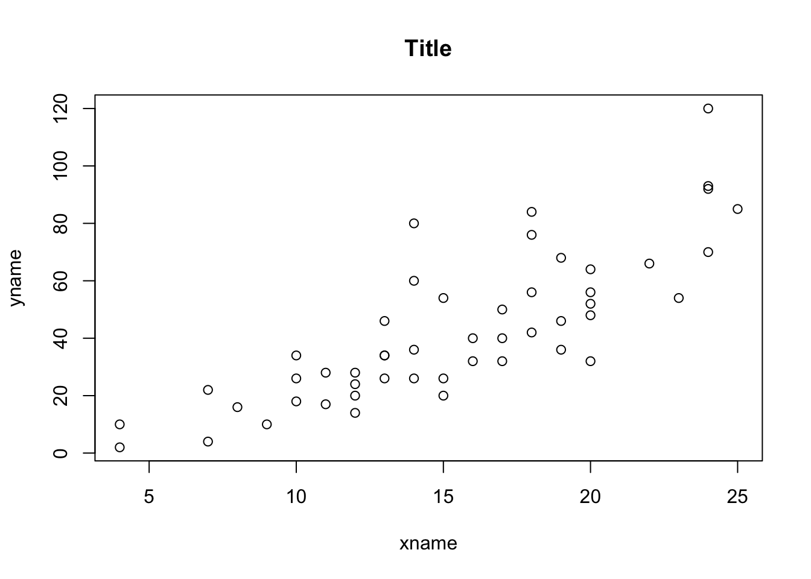

Chapter - :4 Simple regressions
4.1 Basics regressions
Regressions, correlation and dummy’s
Y = Dependent
X = Explanatory
Correlation
cor(x, y)[1] 0.8068949Creating the regression:
- To plot the regression model
- Evaluates the coefficient of the model
- Only the first colum estimattion
model <- lm(y~x, data = data)
summary(model)$coef Estimate Std. Error t value Pr(>|t|)
(Intercept) -17.579095 6.7584402 -2.601058 0.012318816153809090
x 3.932409 0.4155128 9.463990 0.000000000001489836est <- summary(model)$coef[,1]4.1.1 Summarizing regressions:
- Using stargazer package
library(stargazer)
stargazer(lm(y~x, data=data), type="text")
===============================================
Dependent variable:
---------------------------
y
-----------------------------------------------
x 3.932***
(0.416)
Constant -17.579**
(6.758)
-----------------------------------------------
Observations 50
R2 0.651
Adjusted R2 0.644
Residual Std. Error 15.380 (df = 48)
F Statistic 89.567*** (df = 1; 48)
===============================================
Note: *p<0.1; **p<0.05; ***p<0.01# Multiple models adjacent
model1 <- lm(y~x, data=data)
model2 <- lm(x~y, data=data)
stargazer(model1, model2, type="text")
==========================================================
Dependent variable:
----------------------------
y x
(1) (2)
----------------------------------------------------------
x 3.932***
(0.416)
y 0.166***
(0.017)
Constant -17.579** 8.284***
(6.758) (0.874)
----------------------------------------------------------
Observations 50 50
R2 0.651 0.651
Adjusted R2 0.644 0.644
Residual Std. Error (df = 48) 15.380 3.156
F Statistic (df = 1; 48) 89.567*** 89.567***
==========================================================
Note: *p<0.1; **p<0.05; ***p<0.01- Using summary function:
summary(lm(y~x))
Call:
lm(formula = y ~ x)
Residuals:
Min 1Q Median 3Q Max
-29.069 -9.525 -2.272 9.215 43.201
Coefficients:
Estimate Std. Error t value Pr(>|t|)
(Intercept) -17.5791 6.7584 -2.601 0.0123 *
x 3.9324 0.4155 9.464 0.00000000000149 ***
---
Signif. codes: 0 '***' 0.001 '**' 0.01 '*' 0.05 '.' 0.1 ' ' 1
Residual standard error: 15.38 on 48 degrees of freedom
Multiple R-squared: 0.6511, Adjusted R-squared: 0.6438
F-statistic: 89.57 on 1 and 48 DF, p-value: 0.00000000000149Regressions
Plotting regression
plot(y~x,data=data,
main="Title",
ylab="yname",
xlab="xname"
)
Including regression line:
plot(y~x,data=data,
main="Title",
ylab="yname",
xlab="xname"
)
abline(lm(y~x, data=data), col="blue")Confidence interval around slope
confint(lm(y~x), level=0.95) 2.5 % 97.5 %
(Intercept) -31.167850 -3.990340
x 3.096964 4.767853Sub-sampling regression
Specify dimensions [,]. First is row. Column, second.
- Selects the rows where age is larger than 5.
- Lower than 5.
sub1 <- summary(lm(y~x, data=data["speed">=5,]))
sub2 <- summary(lm(y~x, data=data["speed"<=5,]))###Dummy variables, diff in means
4.1.2 Regression + dummy
Y = Constant0 + B0 * X - Diff in means + B1 * variable1*2
Omitting the intercept:
Shows the means separately and not the difference between means. Tests whether the expected counts are different from zero.
lm(y ~ x - 1, data = data)
Call:
lm(formula = y ~ x - 1, data = data)
Coefficients:
x
2.909 Reorders group, to specific value to be first.
variable2 <- relevel(variable, “C”)
4.2 Prediction
model <- lm(y~x)
newdata <- data.frame(variablename = c(1:50))
pred <- predict(model, newdata = newdata)Prediction confidence interval:
- One value
- Multiple values from a existing data frame
pred1 <- predict(model, data.frame(valuename = x), interval = "confidence", level=0.95)
pred2 <- predict(model, newdata = newdata, interval = "confidence", level=0.95)Prediction interval
- One value
- Multiple values from a existing data frame
pred1 <- predict(model, data.frame(valuename = x), interval="predict",level=0.95)
pred2 <- predict(model, newdata, interval="predict",level=0.95)4.2.1 Confidence and prediction plotting
Adds: observed values, fitted line, conf interval, predicted interval
library(HH)Loading required package: latticeExtra
Attaching package: 'latticeExtra'The following object is masked from 'package:ggplot2':
layerLoading required package: multcompLoading required package: mvtnorm
Attaching package: 'mvtnorm'The following objects are masked from 'package:LaplacesDemon':
dmvt, rmvtLoading required package: TH.dataLoading required package: MASS
Attaching package: 'MASS'The following object is masked from 'package:dplyr':
selectThe following object is masked from 'package:formattable':
area
Attaching package: 'TH.data'The following object is masked from 'package:MASS':
geyser
Attaching package: 'HH'The following object is masked from 'package:psych':
logitThe following object is masked from 'package:purrr':
transposeThe following objects are masked from 'package:LaplacesDemon':
interval, logitThe following object is masked from 'package:data.table':
transposefit <- lm(y~x, data = data)
ci.plot(fit)###Prediction with dummy variables
Prediction = ùõº1+ùõº2Constant Dummy+ùõΩ1ùëÜùëñùëßùëí+ùõΩ2Slope Dummy
###Prediction intervals examples
Prediction
fit <- lm(y ~ x + d + d, data = data)
pred <- predict(fit, data.frame(VariableX = c(10), Dummy = c(1), Slopedummy = c(10)) )Confidence interval prediction
fit <- lm(y ~ x + d + d, data = data)
pred <- predict(fit, data.frame(VariableX = c(10), Dummy = c(1), Slopedummy = c(10), interval="confidence"))Prediction interval
fit <- lm(y ~ x + d + d, data = data)
pred <- predict(fit, data.frame(VariableX = c(10), Dummy = c(1), Slopedummy = c(10), interval="predict"))4.3 Data problems
Residual plot
# residual.plots(fitted(fit), resid(fit), sigma.hat(fit), main="Title")Influential measure test
im <- influence.measures(fit)###Multicollinearity
- F-test
- Variance inflation factors greater than 10
fit <- lm(y~x + d, data = data)
anova(fit)Analysis of Variance Table
Response: y
Df Sum Sq Mean Sq F value Pr(>F)
x 1 21186 21185.5 89.567 0.00000000000149 ***
Residuals 48 11354 236.5
---
Signif. codes: 0 '***' 0.001 '**' 0.01 '*' 0.05 '.' 0.1 ' ' 1vif(fit) x d
1 NaN 4.3.1 ANOVA
One-way: one value
res.aov <- aov(y ~ x, data = data)
summary(res.aov) Df Sum Sq Mean Sq F value Pr(>F)
x 1 21185 21185 89.57 0.00000000000149 ***
Residuals 48 11354 237
---
Signif. codes: 0 '***' 0.001 '**' 0.01 '*' 0.05 '.' 0.1 ' ' 1Two-way: more than two factors
res.aov <- aov(y ~ x + d, data = data)
summary(res.aov) Df Sum Sq Mean Sq F value Pr(>F)
x 1 21185 21185 89.57 0.00000000000149 ***
Residuals 48 11354 237
---
Signif. codes: 0 '***' 0.001 '**' 0.01 '*' 0.05 '.' 0.1 ' ' 1With interaction
res.aov <- aov(y ~ x * d, data = data)
summary(res.aov) Df Sum Sq Mean Sq F value Pr(>F)
x 1 21185 21185 89.57 0.00000000000149 ***
Residuals 48 11354 237
---
Signif. codes: 0 '***' 0.001 '**' 0.01 '*' 0.05 '.' 0.1 ' ' 1Three-way
- Three way
- With interaction
summary(aov(y ~ x + d, data=data)) Df Sum Sq Mean Sq F value Pr(>F)
x 1 21185 21185 89.57 0.00000000000149 ***
Residuals 48 11354 237
---
Signif. codes: 0 '***' 0.001 '**' 0.01 '*' 0.05 '.' 0.1 ' ' 1summary(aov(y ~ x + d, data=data)) Df Sum Sq Mean Sq F value Pr(>F)
x 1 21185 21185 89.57 0.00000000000149 ***
Residuals 48 11354 237
---
Signif. codes: 0 '***' 0.001 '**' 0.01 '*' 0.05 '.' 0.1 ' ' 1MANOVA: Multiple factors
- Test in difference
- Test separately
test_manova <- manova(cbind(y, d) ~ x, data = data) summary(test_manova) summary.aov(test_manova)